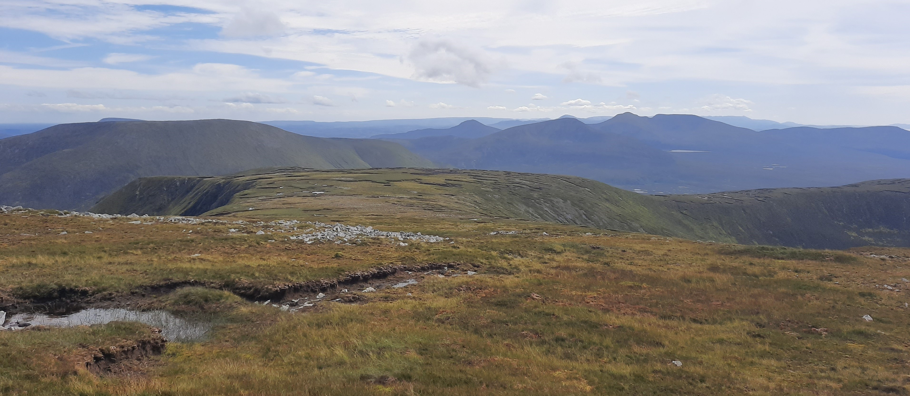

* This is a college project *
The Nephin Beg Mountain Range
The Nephin Beg mountain range, located in North-West Mayo, is one of the wildest and most remote areas in the country, feauturing stunning scenery such as high peaks, flwoing waterfalls, hidden glacial lakes and steep cliffs. The purpose of this website is to provide those wishing to visit the area with information about the mountains within the range that they can use to plan their trip.